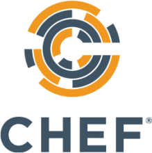
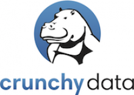

All Things Open is the largest open source/tech/web event on the East Coast of the United States. The 2019 conference will take place October 13-15 in Raleigh, NC and The Research Triangle.
Exhibitors

AREDN™ (Amateur Radio Emergency Data Network) organization develops open source solutions in the Amateur Radio Community for purposes of Emergency Communications using wireless high speed data technologies.
The AREDN team builds upon linux, OLSR, and OpenWRT using commercial Wireless ISP devices and extending frequencies across a wide range of Amateur only microwave bands. The result is a commercial grade off-the-grid viable alternative network suitable for restoring some degree of inter/intra‐net connectivity “when all else fails”.
Silver Sponsor
Bareos (Backup Archiving Recovery Open Sourced) is a reliable network open source software to backup, archive and restore files from all major operating systems. The fork was founded 2010 out of the bacula.org project, in order to pursue development of new capabilities and sustainable ensure it’s open source character.
Today Bareos comes with a new multi-lingual and multi-tenancy web ui including restore browser, LTO hardware encryption support, bandwidth limitation, cloud storage support, a redesigned plugin interface, among other new features.
Data Con LA, formerly known as Big Data Day LA, is the largest data conference of it's kind in Southern California. Spearheaded by Subash D’Souza and organized and supported by a community of volunteers, sponsors and speakers, Data Con LA features the most vibrant gathering of data and technology enthusiasts in Los Angeles. The first Data Con LA conference was in 2013, with just over 250 attendees. We have since grown to over 550 attendees in 2014, 950+ attendees in 2015, 1200+ attendees in 2016, and 1550+ attendees in 2017 and 1800+ in 2018.

Gold Sponsor
Chef is the leader in Continuous Automation software, and one of the founders of the DevOps movement. Chef works with more than a thousand of the most innovative companies across the world to deliver their vision of digital transformation, providing the practices and platform to deliver software at speed. Chef Automate is Chef’s Continuous Automation Platform which is powered by open-source software engines: Chef for infrastructure, Habitat for applications, and InSpec for Compliance.
Gold Sponsor
Cloud native computing uses an open source software stack to deploy applications as microservices, packaging each part into its own container, and dynamically orchestrating those containers to optimize resource utilization. The Cloud Native Computing Foundation (CNCF) hosts critical components of cloud native software stacks including Kubernetes, Fluentd, linkerd, Prometheus, OpenTracing, gRPC, CoreDNS, containerd, rkt, CNI, Envoy, Jaeger, Notary, and TUF.
Silver Sponsor
Founded with a vision of simplifying big data and log analytics at scale, Cribl is innovating the real-time data pipeline. Led by a team of practitioners and former Splunk employees, Cribl provides users a new level of observability, intelligence and control over their data.

Silver Sponsor
Crunchy Data is the leading provider of trusted open source PostgreSQL and enterprise PostgreSQL technology, support and training. Crunchy Data offers Crunchy Certified PostgreSQL, the most advanced true open source RDBMS on the market. Crunchy Data is a leading provider of cloud native PostgreSQL – providing open source, cloud-agnostic PostgreSQL-as-a-Service solutions.

Silver Sponsor
Datadog is a monitoring and analytics platform for large-scale application infrastructure. Combining metrics from servers, databases, and applications, Datadog delivers sophisticated, actionable alerts, and provides real-time visibility of your entire infrastructure. Datadog includes 120+ vendor-supported, prebuilt integrations and monitors hundreds of thousands of hosts.

If this is the first time you are joining us, welcome to the Darknet.
Our goal is to teach you skills such as lockpicking, soldering, hardware hacking, social engineering, cryptography, privacy, and more.
We assume you have little to no previous knowledge on a subject,
So we teach you starting at a zero-point, so it is open to all levels.
But more importantly DarkNet is a radical, egalitarian social order:
it’s the democratization of technology, production, and information.